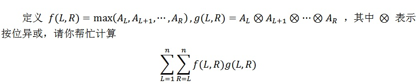

有些人在社交网络中使用过许多的密码，我们通过将各种形式的信息转化为 01 信号，再转化为整数，可以将这个
人在一段时间内使用过的密码视为一个长度为 n 的非负整数序列 A_1,A_2,...,A_n 。一个人相邻几次在社交网络
中使用的密码很有可能是类似的，这使得密码并不是足够安全。为了检验某些人在某些时间段内是否可能受到不安
全的影响，我们需要计算上述序列的复杂程度。

的值，这将作为我们评估密码复杂程度的一个部分。由于答案可能很大，你只需要给出答案对10^9+61 取模的值即可。